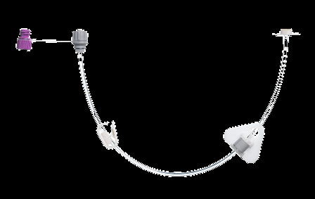

Department of Geriatrics and Internal Medicine, First Faculty of Medicine, Charles University and General University Hospital in Prague
3rd Department of Internal Medicine, First Faculty of Medicine
Palliative care
Nutrition in patients with dementia
Between evidence, ethics and the reality of care
Tereza Vágnerová, MSc, Eng, PhD

Introduction
Starting or stopping nutritional support is rarely an easy decision.
Nutrition and hydration in palliative medicine are widely debated. The indication must be part of comprehensive, holistic care delivered by a multidisciplinary team.
02
Introduction
Indicate early – and only where the benefit is real.
Assessing nutritional status deserves particular attention in palliative care.
Nutritional support is indicated early, where it brings the patient a demonstrable benefit.
The goals of the intervention must be realistic. An unrealistic goal is worse than none.
03
Goals of care
Autonomy, beneficence, non-maleficence, justice.
These principles apply to the indication of any form of nutritional support
Vienna Declaration 2022 – nutritional care as a human right.
A goal of care should be
- specific
- measurable
- achievable (realistic)
- time-bound (revisable)
- in line with the wishes of the patient and family
Vienna Declaration on Nutritional Care, 2022
04
An informed patient may refuse treatment.
Even when refusing care will lead to death – nutritional care included.
05
Decision-making
Nutritional status predicts outcome.
At diagnosis and throughout the course of the disease.
Malnutrition – undernutrition as well as obesity – and the associated nutritional disorders (sarcopenia, frailty, disease- or organ-specific cachexia) affect:
- survival
- treatment efficacy
- functional status
- the patient's quality of life
www.cant.cz/seznam-ambulanci
06
How to proceed
The earlier, the better.
A basic understanding of the disease course and its complications (e.g. in Alzheimer's disease) is associated with a smoother course, fewer aggressive interventions in the last 3 years of life and better quality of life.
The absence of directives in patients with dementia increases hospitalisations (75% unnecessary) and invasive procedures, is traumatising, and largely fails the intended goal – comfort.
Progression of malnutrition is a characteristic sign of advanced disease.
07
Nutritional assessment
Stress malnutrition, or cachexia?
Acute · stress malnutrition
We distinguish acute from chronic signs. We focus on baseline functional, cognitive and overall health parameters, and take the social and family situation into account.
Chronic · cachexia
Very common in advanced disease (cancer, kidney disease, dementia, heart failure). A complex problem. It cannot be solved by “eating more”.
Significant uncontrolled weight loss points to an end-of-life situation. Age is a major prognostic factor.
08

Part two · Case study
A patient with severe dementia
Two residents, one question: who are we eating for?

Case study
Is “comfort feeding” the right approach for Mr Jaroslav?
Mr Jaroslav, 88, a resident of a specialised care home with Alzheimer's disease at the stage of advanced dementia.
- dysphagia: swallowing reflex often absent or severely delayed, drooling
- receives pureed food and thickened fluids
- intake 0–25% because of the difficulties
- his wife is present at lunch and voices concern about his weight
10
Case study
Who is Mrs Jaroslava eating for?
Mrs Jaroslava is a resident with severe dementia in your facility.
Her daughter insists on feeding her, although Mrs Jaroslava repeatedly refuses food and has very little appetite.
11
Explaining dementia
The body slows down, and what it needs changes.
Dementia – most often Alzheimer's disease – progressively impairs brain function. Over a few years most people develop problems with chewing and swallowing.
- problems with memory, thinking and planning
- problems with expression
- inability to recognise people or objects
- personality change
At mealtimes
- difficulty swallowing certain foods
- may not feel hunger; stop eating and drinking even without dysphagia
- forget to eat, or how to eat
- fall asleep during meals
- increased effort at meals; assistance needed
Changes in intake, swallowing and function point to natural deterioration.
12
Dysphagia
When should you reconsider how someone is fed?
The patient may inhale food or drink into the lungs – aspiration, which can cause pneumonia. The cause is loss of control of the throat muscles.
- weight loss
- coughing or wheezing while eating or drinking
- food or drink leaking from the mouth
- parts of the bolus remaining in the mouth after swallowing
- a long time spent eating
In dementia you can never be sure whether the patient feels hunger or thirst. Patients with very severe dementia rarely report it.
Two routes
- modified texture of food and fluids, assistance with eating and drinking
- tube feeding or a gastrostomy
13

What a resident needs changes as the end of life approaches…
…a resident who stops eating is not suffering, and not starving.
14
Hunger and thirst
At the end of life, hunger and thirst switch themselves off.
Part of the metabolic changes: the body ensures that starvation is not painful. This does not apply in the same way to a healthy person.
Starvation activates ketone bodies, which induce satiety. Endogenous opioids rise – potentially more potent than morphine. Relaxation and relief from pain.
Mechanism in detail → appendix
15
Comfort feeding
As much as they want, for as long as eating brings no distress.
We explain the options for modifying food and fluids (and who decides), the principle of assisted feeding, the risks (higher aspiration risk) and the benefits (socialisation, care by the family).
A tangible alternative to tube feeding.
Recommended path
Questions families ask
- Can every patient with dementia be hand-fed?
- How effective is assisted feeding?
- What happens if my relative cannot eat anything by mouth?
- What can I do to help when they can no longer eat or drink?
16

Exercise
What would you do if someone tried to feed you?
Close your eyes for a moment and imagine you have advanced dementia and cannot tell your carer that you do not want to eat.
17
I spit. I turn my head away. I clamp my mouth shut. I fend off the spoon.
18
I get angry. I shout. I want to leave the room. I push the plate away…
18

Refusing food becomes a source of anxiety for everyone giving care…
…but eating less does not hasten death.
19
Things to keep in mind
Eating less is a symptom, not a cause.
The need for information. People with advanced dementia are approaching the end of life. Knowing what the patient wishes (or would have wished), and then the family, is key.
It is painful for relatives to watch a loved one refuse food. Food is tied to “life force” and is a powerful social act. The family is often more anxious than the resident.
We weigh several aspects: previously expressed wishes, religious and cultural values, what food meant to the person, closeness, and the act of caring itself. Whatever the intake, it is the disease itself that leads to death.
20

Being there is also care.

Comfort feeding
Only as much as they want.
But!
There is a point where interventions stop working.
If a supplement is safe for the resident, they enjoy it (even in small amounts), are used to it, prefer it to food, and it gives the family at least some comfort – we do not withdraw it automatically.
23

Tube / gastrostomy
What does tube or gastrostomy feeding actually involve?
Explaining the placement, how the system works, feed administration and care of the access site.
peg.freseniuskabiforum.eu
Questions families ask
- Will the patient be confined to bed all day?
- Can the tube or gastrostomy be removed?
- Will my relative live longer?
- Will they be less likely to aspirate?
24
Artificial nutrition
Up to four in ten patients die within a month of PEG placement.
10–43%
30-day mortality after PEG placement
In advanced dementia the range is wide, but even its lower bound does not support the idea that a tube “prolongs life”.
Mortality after PEG · Davies et al., Cochrane
25
Artificial nutrition vs. oral intake
Is an NG tube or PEG appropriate?
Mortality after PEG placement
30 days
12–18 months
36–48 months
Benefits
- access for hydration and medication (pain relief via the access)
Risks
- of those surviving ≥ 60 days, 70% show no functional improvement
- greater burden on carers and family
- increased risk of pressure ulcers, pneumonia and complications
Mortality after PEG · Davies et al., Cochrane
26
How the decision-maker feels
Empathy is not optional here.
The decision-maker should know they can share concerns, seek information, and change their decision over time. They should know the risks and benefits of both options and remain fully involved in the care plan.
- Do you feel pressured by others?
- Do you feel torn between your own beliefs and the patient's?
- Do you have unanswered questions and need more information?
- What is your overall sense of the right choice?
27

Systematic review
“We found no evidence that tube feeding improves survival, quality of life, pain, mortality, behavioural and psychological symptoms of dementia, nutritional status, or the psychological symptoms of family or carers. We found some evidence of a clinically significant risk of pressure ulcers with enteral feeding.”
Davies N, Barrado-Martín Y, Vickerstaff V et al. Enteral tube feeding for people with severe dementia. Cochrane Database Syst Rev

Case study · plan
What do we do for Mr Jaroslav?
- 01Inform the attending physician of the current situation.
- 02Call the legal representative and explain what has changed in his intake.
- 03Explain that the changes point to progression of dementia and are expected.
- 04Explain the concept of comfort feeding to the family and to the care staff.
- 05Make sure they understand that it will not meet nutritional requirements (energy, macro- or micronutrients).
- 06Answer the family's questions.
- 07Offer to keep them informed about weight changes.
- 08Inform the care team that end of life can be expected in the near future.
29
Conclusion
Nutrition decisions are hard, and they are never made by one discipline alone.
The basic principles must always be preserved: autonomy, beneficence, non-maleficence, justice.
30
Appendix
Material for the discussion
Questions for the family, and the hunger-suppression mechanism in detail. There when someone asks.
Questions to ask
What would they have wanted, and what serves them best?
- Did your relative ever tell you their wishes about treatment in case of serious illness?
- Do they have a will, or did they express wishes or preferences about artificial nutrition?
- What are their beliefs and values about care in serious, incurable illness?
- If they could see the pros and cons, what would they choose?
- What do you believe is in their best interest?
- Does the doctor expect the cause of the eating and drinking problems to improve?
- How likely is it that the “tube” will distress them and require restraint or sedation?
- Will the tube or gastrostomy limit their care?
- Do they have another condition that affects the decision?
- Do they seem to prefer eating by mouth?
A1
Appendix · Hunger and thirst
How hunger switches off, in detail.
- ketone bodies – anorectic effect, possibly a mild sedative to euphoric central effect
- metabolic acidosis and hypernatraemia – mild dulling of consciousness
- accumulation of endogenous opioids
- reduced secretions with dehydration – less dyspnoea, less nausea
- uraemia and other metabolites in the terminal stage
A2

Thank you.
Tereza Vágnerová, MSc, Eng, PhD
Department of Geriatrics and Internal Medicine, First Faculty of Medicine, Charles University and General University Hospital in Prague
tereza.vagnerova@lf1.cuni.cz